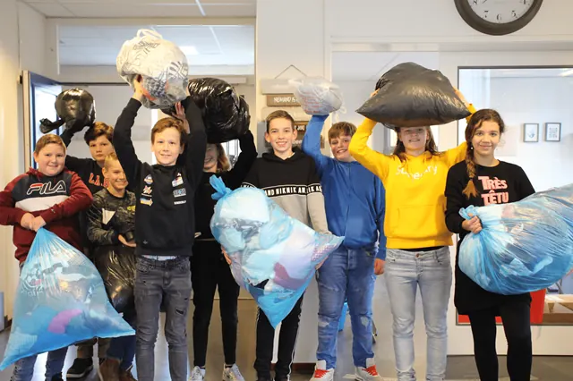

Nieuws ·
Kick-off Textielrace in Nijmegen: scholen zamelen zoveel mogelijk textiel in

Als onderdeel van het regionale educatieprogramma, organiseert Dar van 11 maart tot en met 11 april de Textiel Race in Nijmegen. Een aantal scholen leren alles over het belang van hergebruiken, repareren en recyclen van textiel! Na een gastles nemen ze het tegen elkaar op om zoveel textiel in te zamelen.
U bent van harte welkom voor de kick-off van de Textiel Race
Woensdag 13 maart om 08:30 uur
Hidaya school, Heiweg 99, 6533 PA in Nijmegen
Bent u er ook bij? Meld u dan uiterlijk dinsdag 12 maart aan via communicatie@dar.nl
Wat mag er allemaal bij textiel?
Denk bij textiel aan kleding, linnengoed (lakens en handdoeken), tassen, knuffels, schoenen en ook kapot textiel zoals kapotte poetsdoeken. Let op! Doe alleen schoon en droog textiel in een dichte zak.
Textiel laten ophalen?
Bewoners die in de buurt van de scholen wonen, kunnen tussen 18 maart en 11 april gemakkelijk en gratis hun textiel thuis laten ophalen. Dit doen ze door hun textiel online aan te bieden op www.textielrace.nl. Het opgehaalde textiel en kleding wordt hergebruikt en gerecycled. En de school die het meeste inzamelt wint ook nog eens een schoolreis. Ook is er een prijs voor de tweede en derde plek. Zo maakt de Textiel Race het inzamelen van textiel leuk, leerzaam en gemakkelijk!
Helpt u ook mee?
Als bewoners hun textiel op een juiste manier inleveren, dragen bewoners eraan bij dat er minder milieuschade is, er minder mensen onder slechte omstandigheden moeten werken en er meer textiel hergebruikt kan worden. We maken het bewoners gemakkelijk doordat het afval thuis opgehaald kan worden. Bovendien steunen bewoners de school in hun buurt als kanshebber op een schoolreis. Doe ook mee en zet textiel online! Als dank voor het online aanmelden, ontvangen bewoners kortingscodes voor verschillende duurzame merken.
Welke scholen doen er mee in Nijmegen aan deTextielrace?
- Hidaya school locatie Heiweg en locatie Akkerlaan
- Basisschool de Lanteerne
- Tarcisiusschool
- De Wingerd
- Montessorischool Nijmegen
- Talita Koemi School
- Kindcentrum Toon
- De Geldershof
Meer informatie over de Textiel Race: www.dar.nl/textielrace